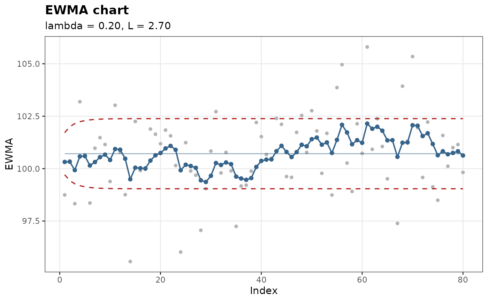

Constructs an EWMA chart for a single column of individual measurements. The chart is more sensitive than a Shewhart I chart to small but persistent shifts in the process mean, at the cost of a longer reaction time to large shifts.
Usage
shewhart_ewma(
data,
value,
index = NULL,
target = NULL,
sigma = NULL,
lambda = 0.2,
L = 2.7,
steady_state = FALSE,
rules = "nelson_1_beyond_3s",
locale = getOption("shewhart.locale", "en"),
verbose = NULL
)Arguments
- data
A data frame.
- value
Tidy-eval column reference for the measurement.
- index
Optional tidy-eval column reference for the x-axis.
- target
Numeric. Process target / centre line. Defaults to
mean(value).- sigma
Numeric. Process sigma. Defaults to
MR_bar / 1.128.- lambda
Numeric in
(0, 1]. Smoothing constant. Default0.2. Smaller lambda = more memory, more sensitive to small shifts.- L
Numeric. Width of the limits in standard errors of the EWMA. Default
2.7, which combined withlambda = 0.2yieldsARL_0 ~ 370(Lucas & Saccucci 1990).- steady_state
Logical. Use asymptotic (constant) limits instead of time-varying ones?
- rules
Character vector of runs rules to flag. Defaults to Nelson 1 only — the EWMA's own limits already encode most of the diagnostic power and the higher-order Nelson rules are not designed for autocorrelated statistics.
- locale
One of
"en","pt","es","fr".- verbose
Logical. Print progress messages?
Value
A shewhart_chart object of subclass shewhart_ewma. The
augmented slot has columns .value (the original observation),
.ewma (the smoothed statistic z_i, plotted on the chart), and
the usual .center, .upper, .lower, .flag_*.
Details
By default, sigma is estimated from the moving range of value
(Wheeler 1992 convention, MR_bar / 1.128); the centre is the mean
of value. Either can be overridden via target and sigma for
Phase II monitoring against pre-calibrated values.
Limits are time-varying by default — they widen out from target
as the EWMA "warms up" — converging to the asymptotic limits as
i -> infinity. Set steady_state = TRUE to use the asymptotic
limits everywhere (commonly chosen when calibrating from a long
baseline).
References
Roberts, S. W. (1959). Control Chart Tests Based on Geometric Moving Averages. Technometrics, 1(3), 239-250. doi:10.1080/00401706.1959.10489860
Lucas, J. M., & Saccucci, M. S. (1990). Exponentially Weighted Moving Average Control Schemes: Properties and Enhancements. Technometrics, 32(1), 1-12. doi:10.1080/00401706.1990.10484583
Montgomery, D. C. (2019). Introduction to Statistical Quality Control (8th ed.). Wiley. Chapter 9.
Examples
set.seed(1)
df <- data.frame(
day = 1:80,
y = c(rnorm(40, mean = 100, sd = 2),
rnorm(40, mean = 101, sd = 2)) # 0.5 sigma shift
)
fit <- shewhart_ewma(df, value = y, index = day)
print(fit)
#>
#> ── Shewhart chart ewma ─────────────────────────────────────────────────────────
#> • Observations / subgroups: 80
#> • Phase: "phase_1"
#> • Sigma estimate ("mr"): 1.857
#>
#> ── Control limits ──
#>
#> # A tibble: 3 × 3
#> chart line value
#> <chr> <chr> <dbl>
#> 1 EWMA CL 101.
#> 2 EWMA UCL_asymptotic 102.
#> 3 EWMA LCL_asymptotic 99.0
#> ── Rule violations ──
#>
#> ✔ No violations across 1 rule: "nelson_1_beyond_3s".
# \donttest{
ggplot2::autoplot(fit)

# }